5．一阶偏微分方程
直到拉格朗日的时代，在一阶偏微分方程方面还很少有系统的研究。二阶方程首先受到注意，因为物理问题直接引导出它们。只有很少几种特殊的一阶方程被解出来，但是这些方程或者是容易被积分出来的，或者是通过技巧被积分出来的。只有一个例外，就是形如
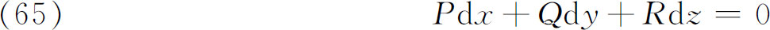
的今天通常称为全微分方程的这种方程，这里P，Q，R是x，y，z的函数。这类方程如果能积分的话，就把z定义成x和y的函数。克莱罗1739年在他关于地球形状的研究(38)中遇到了这样的方程。如果（65）左端的表达式是一个恰当微分，就是说，如果存在函数
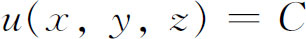
使得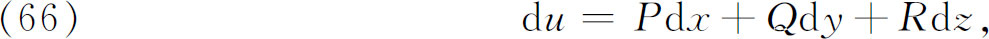
那么，克莱罗指出
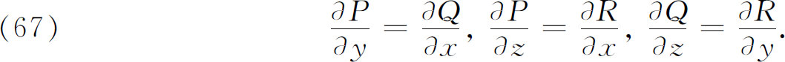
克莱罗讲明怎样用一种现代教科书中仍在使用着的方法求解（65）。如果P，Q，R是流体运动的速度分量，则（65）就是一恰当微分方程，这个事实使人们对方程（65）发生了兴趣。
如果（65）不是恰当微分方程，那么克莱罗也说明了有可能求得积分因子，即这样一个函数
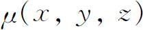
，当用它去乘（65）后，新的左端便是一恰当微分。克莱罗(39)和后来达朗贝尔［《论流体运动的平衡》（Traité de l'équilibre et du mouvement des fluides，1744）］都给出了（65）可积分的一个必要条件（借助于积分因子）。这个条件（同时也是充分的）是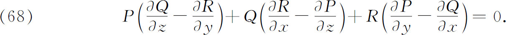
一般的两个自变量的一阶偏微分方程形如
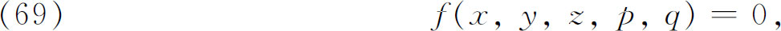
这里
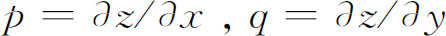
。如果方程关于p，q是线性的，则称之为线性偏微分方程，否则称为非线性的。最重要的理论是拉格朗日贡献的。为了了解拉格朗日的工作，首先必须记住他的至今仍旧通用的术语。他把一阶非线性方程的解分类如下。任一包含两个任意常数的解
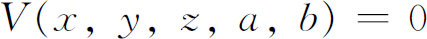
是完全解或完全积分。令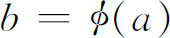
，这里 是任意的，我们就得到一个单参数解族。当
是任意的，我们就得到一个单参数解族。当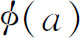
任意时，该族的包络称为通积分。当一个确定的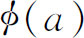
被使用时，这个包络是通积分的一个特殊情况。完全积分中的所有解的包络称为奇解（奇积分）。不久我们将看到这些解在几何上是怎么回事。完全积分不是唯一的，因为能够有许多不相同的完全积分，它们之间通过简单地改变任意常数是不能相互得到的。但是，从任一完全积分，通过特殊情况和奇解，能够得到由另一完全积分给出的所有的解。在我们将要简短地讲到的1772年和1779年的两篇重要文章之间，拉格朗日在1774年写了一篇讨论一阶偏微分方程的完全解、通解和奇解之间的关系的论文。从
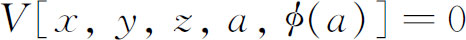
及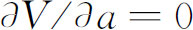
［其中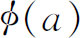
任意］中消去a就得到通积分(40)。［对于一个特殊的 ，我们得到一个特解。］从
，我们得到一个特解。］从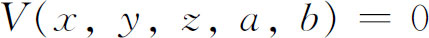
，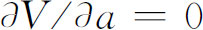
和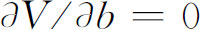
中消去a和b就得到奇解。拉格朗日首次给出非线性一阶方程的一般理论。在1772年的文章(41)中，他考察了两个自变量x，y及一个应变量z的一般一阶方程。这里他改进并推广了欧拉早些时候做的工作。他把方程（69）看作是这样的形式，其中q是x，y，z和p的函数，即
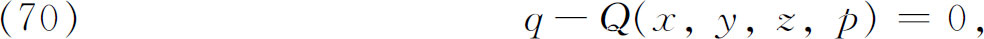
并且试图确定p作为x，y，z的一个函数P，从而使得两个方程
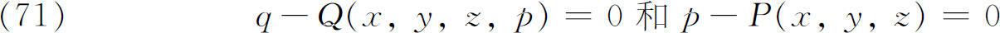
有单重无穷多个公共积分曲面，或者像拉格朗日从分析上阐明它那样，使得表达式
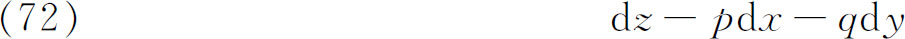
乘以适当因子
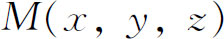
就变成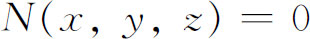
的恰当微分dN。为此必须有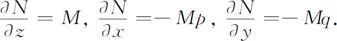
对于这些方程，可积条件（67）蕴涵
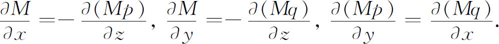
如果把这三个方程中的前两个所给出的
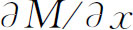
和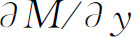
的值代入最后一个，就得到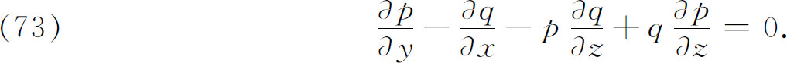
这就是使（72）可积的条件（68），而（68），正如拉格朗日所评注的，是一个早就知道的条件。在（73）中q能取为x，y，z和p的给定函数Q，因而这方程显然变成
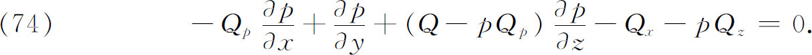
现在，拉格朗日的计划便是寻找这个一阶方程的解p＝P，它关于p的导数是线性的，其解包含一个任意常数α。得到它以后，他再积分两个方程
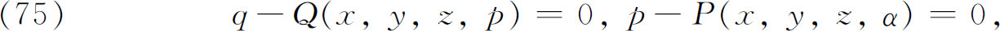
这表示
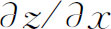
和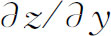
是x，y，z的函数，就求得了原方程（70）的一族∞22个积分曲面；也就是说，他求得了完全解。那么至此，拉格朗日是用解线性方程（74）的问题来代替解非线性方程（70）的问题。1779年拉格朗日给出了他的解线性一阶偏微分方程的方法(42)。他考虑至今仍称为拉格朗日方程的线性方程
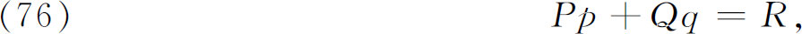
其中P，Q，R是x，y，z的函数。这个方程称为非齐次的，因为有R这项出现。这个方程与三个自变量的齐次方程
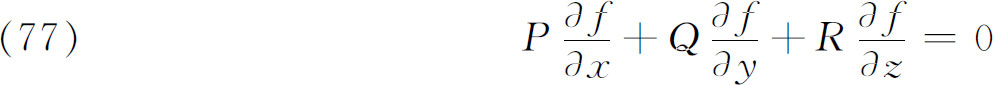
紧密相连。拉格朗日容易地证明了如果
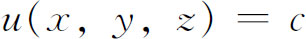
是（76）的一个解，那么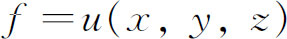
就是（77）的一个解，反之亦然。因此解（76）的问题等价于解（77）。而方程（77）又转而联系着常微分方程组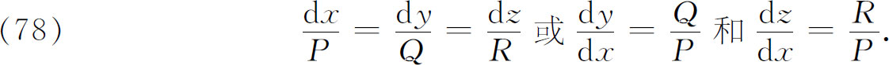
事实上，如果
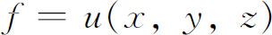
和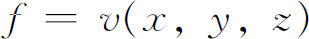
是（77）的两个独立的解，那么 和
和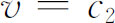
就是（78）的一个解，反之亦然。因此，如果我们能求得（78）的解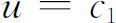
和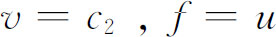
和f＝v就将是（77）的解，并且u＝c和v＝c将是（76）的解。此外容易证明：当 是u，v的任意函数时，
是u，v的任意函数时，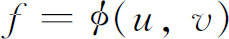
也满足（77）。于是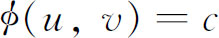
，或因 是任意的，
是任意的，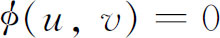
就是（76）的通解。拉格朗日在1779年给出了上述纲要，并在1785年(43)给出了证明。或许值得顺便指出，欧拉也知道（77）的解能被化成（78）的解。如果把线性方程方面的这一工作与1772年在非线性方程方面的工作联系起来，就会看到拉格朗日已经成功地把一个关于x，y，z的任意一阶方程化成为一组联立常微分方程。他没有明显地陈述这个结果，但这是可以从上面的工作直接推出来的。奇怪的是，在1785年他解一个特殊的一阶偏微分方程时却说它不可能用这个方法，看来他忘掉了他较早（1772）的工作！
后来，据推测沙比（Paul Charpit，死于1784年）在1784年把非线性方程和线性方程的方法结合起来，将任一f（x，y，z，p，q）＝0化归为一个常微分方程组。在1798年拉克鲁瓦说，沙比在1784年提出了一篇文章（未出版），其中他把一阶偏微分方程化归到常微分方程组。雅可比发现了拉克鲁瓦惊人的说法，表示希望发表沙比的工作。但是这件事一直没有办到，以至我们不知道拉克鲁瓦的说法是不是正确。事实上，是拉格朗日做了完整的工作，而沙比可能并未增加什么内容。现代教科书中给出的方法——称为拉格朗日、拉格朗日-沙比或沙比方法，是拉格朗日在1772年和1779年文章中提出的思想的融和。这个方法说明为解一般的一阶偏微分方程f（x，y，z，p，q）＝0，就必须解常微分方程组（f＝0的特征方程）
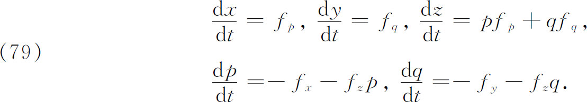
如果求得（79）的任何一个积分，比如说u（x，y，z，p，q）＝A，就可得到解。把这些方程和f＝0联立，解出p，q并代入
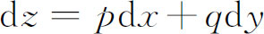
（见公式［72］），最后，用对（65）用过的方法就可求积分。拉格朗日的方法常常称为柯西的特征方法，因为把拉格朗日和沙比对两个自变量的方程过渡到（79）的方法推广到n个变量时出现了困难，而这一困难是由柯西在1819年(44)克服的。